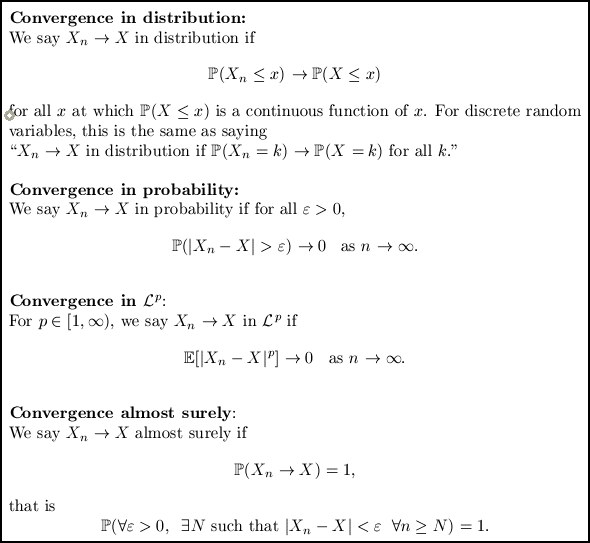
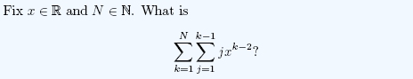

Spring semester 2022
APTS Applied Stochastic Processes
Spring semester 2014
Reading group: noise sensitivity and dynamical percolation
We'll be working from the lecture notes by Jeff Steif and Christophe Garban. Feel free to come and see me (4W1.13) at any point to discuss what exactly you should include - some chapters are long and might need pruning, whereas some are short and you could do some of the exercises or take some stuff from other chapters.
19/2: Matt - Definitions and key concepts (chapter I)
26/2: Matt - Percolation in a nutshell (chapters II and III)
5/3: Cécile - Fourier analysis (chapter IV)
12/3: Matt - Hypercontractivity (chapter V)
19/3: Peter - Noise sensitivity of percolation (chapter VI)
26/3: Steven - Randomized algorithms (chapter VIII)
2/4: Sam - Dynamical percolation (chapter XI)
9/4: Antal - Fluctuations of first passage percolation (chapter VII)
16/4: Chris - The spectral sample (chapter IX)
Winter Term 2012
Math 263: ODEs for engineers
Anyone from Section 1 who wishes to see their exam should contact me by Friday 11th May at the latest. Students from Section 2 should contact Prof Xu.
The official reference for the course is this set of lecture notes by Professor Xu, although you may also find "Elementary Differential Equations and Boundary Value Problems", by Boyce and DiPrima, useful.
Exercise Sheet 1 and solutions. (Erratum: q3, there should be a minus in front of the 4pi^2 - thanks Nemenio.)
Exercise Sheet 2 and solutions.
Exercise Sheet 3 and solutions.
Exercise Sheet 4 and solutions. (Errata: q2b, the determinant should be 9, not 15; q3, W(-1) should be -3e^{-1}, not -e^{-1} - thanks Mandy. Q5, W(x) = e^{x^2/2} - thanks Alexandre.)
Exercise Sheet 5 and solutions.
Exercise Sheet 6 and solutions.
Exercise Sheet 7 and solutions.
Exercise Sheet 8 and solutions.
Exercise Sheet 9 and solutions. (Errata: q3, the third line should have an s in the numerator of the second term. And in the last two lines the 4pi should be 4pi^2 - thanks Ivan.
Exercise Sheet 10 and solutions. (Erratum: q3, the 89 should be an 81 - thanks Sam.)
Exercise Sheet 11 and solutions.
Exercise Sheet 12 and solutions.
There is also this sheet of simple tips. Many people have been making the same little mistakes - so please read this! I'll keep it updated - let me know if you have any suggestions.
Autumn Term 2010
Modèles aléatoires
I will be teaching the second half of the course, which is largely on Markov chains in continuous time. See the IFMA site for timetables and other information. Note that I will be teaching mostly in English, but you are free to ask questions in French - and if you don't understand what I am talking about you should tell me and I will attempt to explain in French (or at least in slower and louder English!)
Autumn Term 2009
MA20034: Probability & random processes
Solutions have now been removed to prevent future students from seeing them!
Example Sheet 9.
Example Sheet 8 and solutions.
Example Sheet 7 (note that in 4d, the sum should go from i=0, not i=1) and solutions.
Example Sheet 6 and solutions.
Example Sheet 5 and solutions. (Solution to question 4 is a bit sketchy but makes sense if you think about it for long enough!)
Example Sheet 4 and solutions. (Error on Sheet 4: Q2 should have the special case p=2/3, not 1/3, the second formula for g(theta) should have 4theta^2/9, not theta^2/9, and the expression for P(V=n) should have 4/9 at the start not 1/9. This was fixed for the printed version.)
Example Sheet 3 and solutions.
Example Sheet 2 and solutions.
Example Sheet 1.
Here is a quick reference guide for different kinds of convergence. I don't know if you have been told the definition of convergence in distribution for continuous random variables, but I put it on there anyway - if not then just ignore it, the discrete version is on there too.

I didn't get time to go over difference equations with you in the tutorial. Here's a quick guide. The first page covers differential equations, which I hope you are familiar with. The second page does difference equations, comparing with how we solve differential equations. This might help with question 2 on sheet 3. If you spot any mistakes please let me know, as I wrote this in about 10 minutes and haven't checked it.
MA10209: Algebra
Some of you had your first seminar before lectures started. Here is a sheet explaining functions, and here is one explaining composition of functions. Note that these were drawn in 10 minutes off the top of my head - your lecture notes will be a better guide once you get them, as will Dr Smith's book! You might also find Wikipedia useful, in particular its pages on intersection and union, power sets (less exciting than they sound!) and identity maps.
{kind=link}
{kind=link}
For question 5, ignore the number 0. By "the empty sum is zero", Dr Smith means "if you add no things together, you get zero". So if we don't put 0 in any of the sets, we don't need to worry about it any more. It turns out that this is the correct approach to take. So if you have no idea what I'm going on about, just imagine that S doesn't contain 0 and do the question with the numbers 1 to 63.
Remember to send me an email if you have any questions!
Spring Term 2009
MA10006: Vectors and Applications
The first part of the course is all about getting used to playing with vectors. It's a bit heavy on definitions - so here are a few reminders.


If you can't prove or derive most of these facts yourself, then you don't fully understand them.
The second part of the course is all about getting used to equations of lines and planes, and you have lots of problems to practise on.
You need to get used to the vector operations dot and wedge. Many of you are getting used to hearing "perpendicular" and thinking "dot product zero", but are not quite so quick to hear "parallel" and think "wedge product zero" (and vice versa). These things should be automatic. And another tip: whenever you have a vector equation and you don't know what to do with it, you should think "What happens if I dot this equation with ... " and "What about if I wedge this equation with ... " (replace ... with any vectors you have lying about).
The third part of the course has some more definitions:

Autumn Term 2008
MA10001: Numbers
See Gregory's MA10001 website for problem sheets, solutions to problem sheets, and a few lecture handouts. There are also files containing comments on mistakes people have made on exams in previous years - I strongly recommend that you read these as part of your revision, because many of them are exactly the mistakes you have been making in tutorials.
The past exam papers themselves can be found on the university's exam papers database.
Many of you struggled with questions about highest common factors. Here is the most important thing you have learnt about highest common factors:
There exists an integer solution (x,y) to the equation
ax + by = c
if and only if hcf(a,b) divides c.
If there is any part of this sentence that you don't understand then it is important that you look it up in your lecture notes - or ask me about it. Try playing about with different values of a, b and c... for example, are there integers x and y such that
24x + 28y = 1 ?
24x + 28y = 2 ?
24x + 28y = 4 ?
24x + 28y = 950 ?
24x + 28y = 952 ?
If you understand the theorem, and can use it (do the problem sheet questions again or ask me for more) then you have a big advantage over lots of other people in the exam.
Here is a double sum question to practise on. It uses several of the tools you have learnt this year - not necessarily all from MA10001.

MA10031: Probability & Statistics I
See Simon's MA10031 website for problem sheets and their solutions, past exam papers and their solutions. There is also a page containing comments on the 2007 exam that may be useful.
Personally I think the combinatorics part of the course is the hardest, in that there are many different kinds of question that could come up in the exam. For many other parts of the course you will find that if you revise well then you can do any question on that topic fairly easily. Here is the table that we used to help you remember your combinatorics:
| With replacement | Without replacement | |
| With ordering | nr | n(n-1)(n-2)...(n-r+1) |
| Without ordering | (n-1+r)C(n-1) | nCr |
Past teaching
I have previously tutored the following courses:
MA10004: Sets & sequences (Spring 2008)
MA20007: Analysis: real numbers, real sequences & series (Autumn 2007)
MA20011: Analysis: real-valued functions of a real variable (Spring 2007)
MA10002: Functions, differentiation & analytical geometry (Autumn 2006)